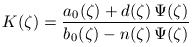
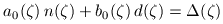

| DirectSD Toolbox |
|
[G,GK,a0,b0] = psigain ( sys, T )
[G,GK,a0,b0] = psigain ( sys, T, Delta )
psigain returns the DC-gain of the parameter
Ψ in the parameterization
|  | (1) |
|  | (2) |
| sys | model of an LTI plant associated with the standard sampled-data system. |
| T | the sampling period |
| Delta | characteristic polynomial of the closed-loop sampled-data system (default Δ(ζ)=1) |
| G | DC-gain of the function Ψ in (1) (NaN if no restriction) |
| GK | DC-gain of the controller (NaN if no restriction) |
| a0, b0 | polynomials satisfying (2) |
Q = 1;
R = tf(1, [1 0]);
F = tf(1, [1 1 1]);
sys = [-R*Q F;R*Q -F];
T = 1;
[G,GK] = psigain(sys, T)
G =
0.3395
GK =
Inf
[1] Polyakov, K.Yu., Polynomial Design of Optimal Sampled-data Control Systems, Dr. Sc. Thesis, State University of Ocean Technology, St. Petersburg, 2006 [in Russian].
modsdh2 H2-optimization of modal digital
controllers.
modsdl2 L2-optimization of modal digital
controllers.
|
|
polquad | quaderr | |
Copyright © 1999-2006 K. Polyakov.